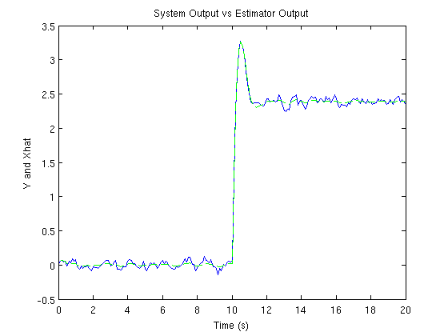
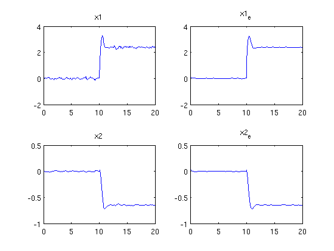
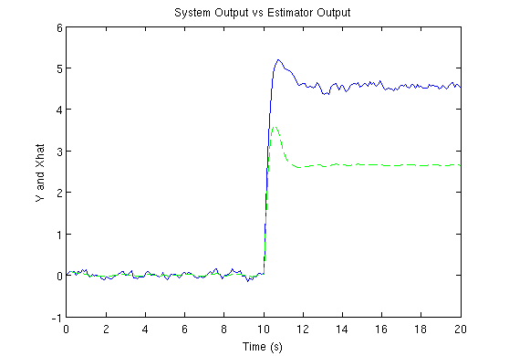
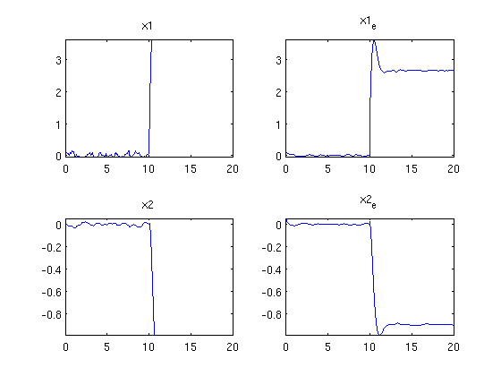
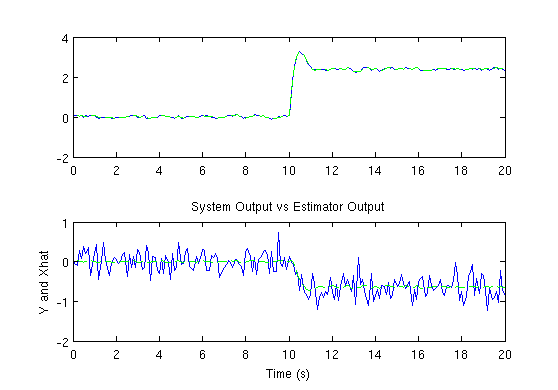
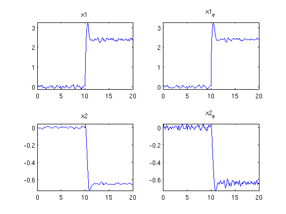

Contents
Homework 4 - Part 4
Estimator for vehicle dynamics
clear; clc; Fs = 10; Ts = 1/Fs;
Part A
Assuming that we can only measure the yaw rate, design a Kalman filter to do full state estimation. Provide a unit step steer input and estimate both states. On one page plot the actual states and estimated states. Where are the steady state poles of the estimator?
A = [-2.62, 12; -0.96, -2]; B = [14;1]; C = [1 0]; D = 0; [Ad,Bd,Cd,Dd] = c2dm(A,B,C,D,Ts,'zoh'); plant_d = ss(Ad,[Bd Bd],Cd,Dd,Ts,... 'inputname',{'u','w'}, ... 'outputname','y',... 'statename',{'yawangle','slipangle'}); sigma_v = 0.1^2; Q = 0.001; R = sigma_v^2; % Simulate the system t = [0:0.1:20]'; u = [zeros(1,100),ones(1,length(t)-100)]'; randn('seed',0); w = sqrt(Q) * randn(size(t)); v = sqrt(R) * randn(size(t)); [y,td,x] = lsim(plant_d,[u,w]); yv = y + v; S = [-Ad, Bd*Q*Bd'; zeros(2), A']; C_bryson = expm(S*Ts); Q_d = C_bryson(3:4,3:4)' * C_bryson(1:2,3:4); R_d = R/Ts; %Preallocations P = 10*eye(2); x_hat = zeros(2,length(t)); for ii = 1:length(t), % Compute Kalman Gain L = P * Cd'/(Cd*P*Cd' + R_d); x_hat(:,ii) = x_hat(:,ii) + L * (yv(ii) - Cd * x_hat(:,ii)); P = (eye(2) - L*Cd)*P; % Propagate Forward x_hat(:,ii+1) = Ad * x_hat(:,ii) + Bd*u(ii); P = Ad * P * Ad' + Q_d; end figure(1); plot(t,yv,t,x_hat(1,1:end-1),'g--'); xlabel('Time (s)'); ylabel('Y and Xhat'); title('System Output vs Estimator Output'); figure(2); subplot(2,2,1); plot(t,x(:,1)); title('x1'); subplot(2,2,2); plot(t,x_hat(1,1:end-1)'); title('x1_e'); subplot(2,2,3); plot(t,x(:,2)); title('x2'); subplot(2,2,4); plot(t,x_hat(2,1:end-1)'); title('x2_e'); 
Part B
Part A now with a changed center of gravity
After trying several Qds, I found that I was unable to overcome the bias that the incorrect model introduced. No matter how the Kalman filter was tweaked, the fact that the model was incorrect removed my estimation capabilities.
A = [-2.42, 4; -0.99, -2]; B = [18;1]; C = [1 0]; D = 0; [Adl,Bdl,Cdl,Ddl] = c2dm(A,B,C,D,Ts,'zoh'); plant_dl = ss(Adl,[Bdl Bdl],Cdl,Ddl,Ts,... 'inputname',{'u','w'}, ... 'outputname','y',... 'statename',{'yawangle','slipangle'}); sigma_v = 0.1^2; Q = 0.01; R = sigma_v^2; % Simulate the system % t = [0:0.1:20]'; % u = [zeros(1,100),ones(1,length(t)-100)]'; % randn('seed',0); % w = sqrt(Q) * randn(size(t)); % v = sqrt(R) * randn(size(t)); [y,td,x] = lsim(plant_dl,[u,w]); yv = y + v; %Preallocations P = 10*eye(2); x_hat = zeros(2,length(t)); for ii = 1:length(t), % Compute Kalman Gain L = P * Cd'/(Cd*P*Cd' + R_d); x_hat(:,ii) = x_hat(:,ii) + L * (yv(ii) - Cd * x_hat(:,ii)); P = (eye(2) - L*Cd)*P; % Propagate Forward x_hat(:,ii+1) = Ad * x_hat(:,ii) + Bd*u(ii); P = Ad * P * Ad' + Q_d; end figure(3); plot(t,yv,t,x_hat(1,1:end-1),'g--'); xlabel('Time (s)'); ylabel('Y and Xhat'); title('System Output vs Estimator Output'); figure(4); ax(1) = subplot(2,2,1); plot(t,x(:,1)); title('x1'); ax(2) = subplot(2,2,2); plot(t,x_hat(1,1:end-1)'); title('x1_e'); ax(3) = subplot(2,2,3); plot(t,x(:,2)); title('x2'); ax(4) = subplot(2,2,4); plot(t,x_hat(2,1:end-1)'); title('x2_e'); pause(2); linkaxes([ax(1),ax(2)],'xy'); linkaxes([ax(3),ax(4)],'xy'); 
Part C
Add a noisy slip angle. Assuming that the sensor noises are uncorrelated, what is R?
sigma_v = 0.1^2; sigma_nu = 0.5^2; R = [sigma_v^2, 0; 0, sigma_nu^2]
R =
0.0001 0
0 0.0625
Part D
Redo part A with the noisy slip angle
A = [-2.62, 12; -0.96, -2]; B = [14;1]; C = [1 0; 0 1]; D = [0;0]; [Ad,Bd,Cd,Dd] = c2dm(A,B,C,D,Ts,'zoh'); plant_d = ss(Ad,Bd,Cd,Dd,Ts,... 'inputname',{'u+w'}, ... 'outputname',{'y','slipangle'},... 'statename',{'yawangle','slipangle'}); Q = 0.001; sigma_v = 0.1^2; sigma_nu = 0.5^2; R = [sigma_v^2, 0; 0, sigma_nu^2]; % Simulate the system t = [0:0.1:20]'; u = [zeros(1,100),ones(1,length(t)-100)]'; randn('seed',0); w = sqrt(Q) * randn(size(t)); v = sqrt(R) * randn(length(t),2)'; [y,td,x] = lsim(plant_d,[u+w]); yv = y + v'; S = [-Ad, Bd*Q*Bd'; zeros(2), A']; C_bryson = expm(S*Ts); Q_d = C_bryson(3:4,3:4)' * C_bryson(1:2,3:4); R_d = R/Ts;
I tried several values of Q_d(2,2), and found that it had to be in the neighborhood of the Q of the system. If Q was much larger than that value, then the estimate tended to be biased. If Q was much smaller than that value, then it tended to "over-filter", and the actual behaviors of the system were not being caught by the filter.
It seems that there was a tuned sweet-spot on the filter where Q_d matched the Q_c of the system.
%Q_d(2,2) = 1.5692e-07 %Q_d(2,2) = 0.000000000000001; Q_d(2,2) = .001; %Preallocations P = 10*eye(2); x_hat = zeros(2,length(t)); for ii = 1:length(t), % Compute Kalman Gain L = P * Cd'/(Cd*P*Cd' + R_d); x_hat(:,ii) = x_hat(:,ii) + L * (yv(ii) - Cd * x_hat(:,ii)); P = (eye(2) - L*Cd)*P; % Propagate Forward x_hat(:,ii+1) = Ad * x_hat(:,ii) + Bd*u(ii); P = Ad * P * Ad' + Q_d; end figure(5); subplot(2,1,1); plot(t,yv(:,1),t,x_hat(1,1:end-1),'g--'); subplot(2,1,2); plot(t,yv(:,2),t,x_hat(2,1:end-1),'g--'); xlabel('Time (s)'); ylabel('Y and Xhat'); title('System Output vs Estimator Output'); figure(6); ax(1) = subplot(2,2,1); plot(t,x(:,1)); title('x1'); ax(2) = subplot(2,2,2); plot(t,x_hat(1,1:end-1)'); title('x1_e'); ax(3) = subplot(2,2,3); plot(t,x(:,2)); title('x2'); ax(4) = subplot(2,2,4); plot(t,x_hat(2,1:end-1)'); title('x2_e'); pause(3); linkaxes([ax(1),ax(2)],'xy'); linkaxes([ax(3),ax(4)],'xy'); 